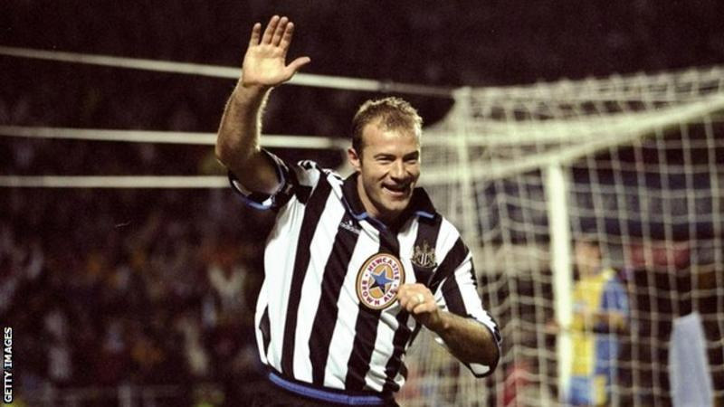

In the 13 years since, no player has come within 50 goals of this record tally for the competition.
But there are currently a small crop of attacking players with aspirations of claiming Shearer's crown, led by Sergio Aguero and including established goalscorers such as Harry Kane, Romelu Lukaku and Mohamed Salah.
Here, BBC Sport does the analysis to see if any of these players are capable of breaking the record and, if so, what more they have to do to surpass one of the Premier League's most iconic milestones.
Shearer's goals
Shearer's total of 260 is particularly impressive, given that it does not include the 23 goals he scored for Southampton in the old First Division, before it was rebranded as the Premier League in 1992.
Shearer began his career with Southampton but joined Blackburn for a then British record £3.3m deal before the very first Premier League season in 1992-93, then joined hometown club Newcastle in 1996, this time for what was a world record fee of £15m.